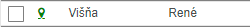

Barevné označení adres
V seznamu jsou jednotlivé adresy barevně označeny různým způsobem.
konkrétní barvy:
Bílá barva - označení pro adresu, která není přidaná do žádné kampaně - není naplánované Datum OSN. Adresu je možné zaškrtnout a přetažením zahrnout do současně vybrané kampaně. Datum OSN bude pro tuto adresu nastaveno na datum vybrané kampaně.

Šedá barva - adresa je přidaná do jiné kampaně - je naplánovaný Datum OSN na jiný termín, než je vybraná současná kampaň. Adresu je možné zaškrtnout a přetažením zahrnout do současně vybrané kampaně. Datum OSN bude pro tuto adresu přenastaveno na datum vybrané kampaně.

Modrá barva - adresa je součástí vybrané kampaně. Takto označenou kampaň nelze měnit. Jediná možnost jak změnit Datum OSN je zařadit adresu do jiné kampaně.